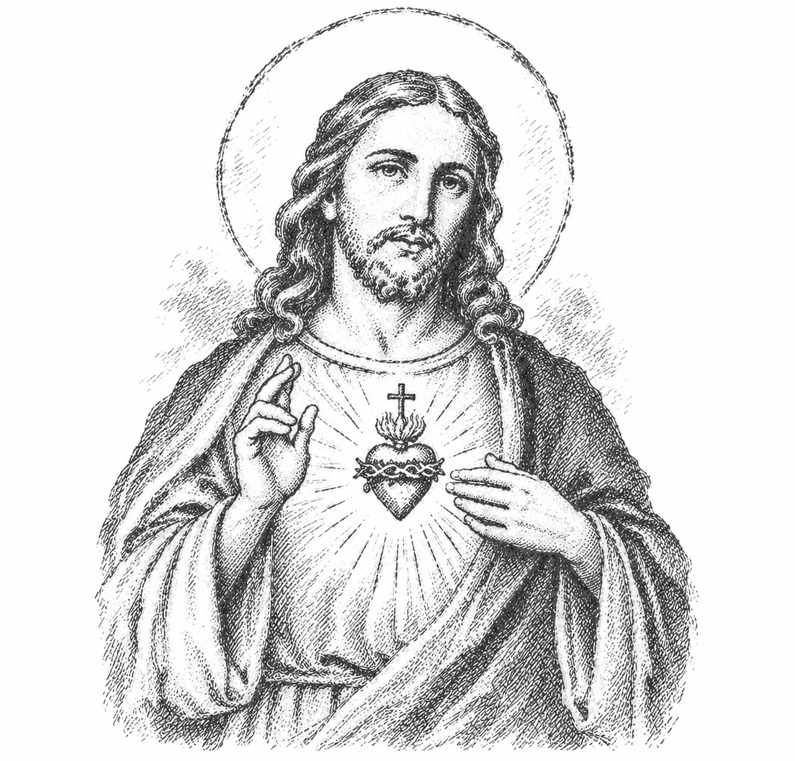
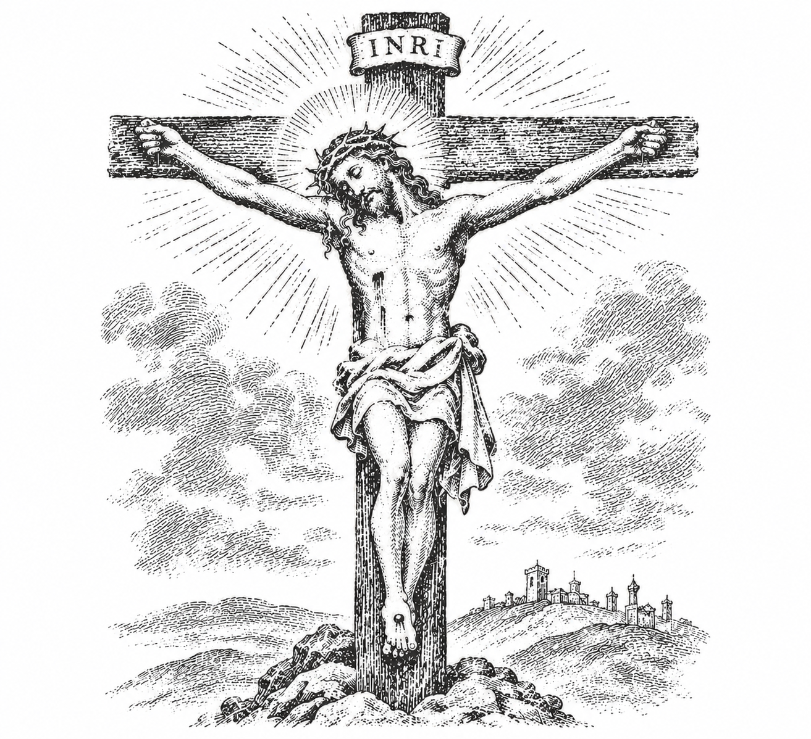

ORAÇÃO DA MANHÃ
Ou troque para a Oração da Noite
Sinal da Cruz e Entrega do Dia
Em nome do Pai, e do Filho, e do Espírito Santo. Amém.
Bom dia, meu Senhor e meu Deus.
Mais um dia começa e eu coloco nas Tuas mãos o meu corpo, a minha mente e a minha casa. O Senhor conhece a minha rotina, sabe as lutas silenciosas que eu enfrento e conhece a minha estrutura.
Hoje eu não venho Te pedir coisas impossíveis, nem fingir que está tudo bem. Venho pedir a Tua presença na minha vida, na minha casa e em tudo o que eu fizer neste dia.
Pedido de Proteção e Paciência
Senhor Jesus, dá-me sabedoria para o dia de hoje.
Onde houver barulho e provocação, dá-me a graça do silêncio. Onde a raiva quiser entrar, coloca a Tua paz.
Guarda a minha boca para que eu não pague o mal com o mal, e guarda o meu coração para que eu não carregue o peso do que os outros fazem ou dizem.
Ensina-me a impor limites com respeito, a agir com prudência e a preservar a minha saúde mental. Quando me faltar paciência, sê Tu a minha força.
Pela Família e pelas Intenções
Abençoa o meu lar, a minha família e todas as pessoas que cruzarem o meu caminho hoje. Protege a nossa casa e afasta de nós o mal, a discórdia e as dificuldades que não conseguimos enfrentar sozinhos.
Nossa Senhora, Mãe de Jesus e nossa Mãe, intercede por mim e pela minha família. Acompanha-nos neste dia e apresenta a teu Filho as nossas necessidades, preocupações e intenções.
Entrego a Deus aquilo que não posso controlar e peço discernimento para fazer bem aquilo que está ao meu alcance.
Orações Tradicionais
Oração Final
Senhor, entrego-Te este dia, meus pensamentos, minhas palavras e minhas ações. Ajuda-me a cumprir minhas responsabilidades com paciência, honestidade e serenidade.
Dá-me força diante das dificuldades, prudência nas decisões e tranquilidade diante daquilo que não depende de mim.
Que eu não perca a fé nas tribulações, nem me esqueça de agradecer pelas graças recebidas.
Por nosso Senhor Jesus Cristo, vosso Filho, na unidade do Espírito Santo. Amém.
Em nome do Pai, e do Filho,
e do Espírito Santo. Amém.
PAI-NOSSO

Pai nosso que estais no céu,
santificado seja o vosso nome;
venha a nós o vosso Reino;
seja feita a vossa vontade,
assim na terra como no céu.
O pão nosso de cada dia nos dai hoje;
perdoai-nos as nossas ofensas,
assim como nós perdoamos
a quem nos tem ofendido;
e não nos deixeis cair em tentação,
mas livrai-nos do mal. Amém.
CREDO APOSTÓLICO

Creio em Deus Pai todo-poderoso,
criador do céu e da terra;
e em Jesus Cristo, seu único Filho,
nosso Senhor;
que foi concebido pelo poder do Espírito Santo;
nasceu da Virgem Maria;
padeceu sob Pôncio Pilatos,
foi crucificado, morto e sepultado;
desceu à mansão dos mortos;
ressuscitou ao terceiro dia;
subiu aos céus;
está sentado à direita de Deus Pai todo-poderoso,
donde há de vir a julgar os vivos e os mortos.
Creio no Espírito Santo;
na Santa Igreja Católica;
na comunhão dos santos;
na remissão dos pecados;
na ressurreição da carne;
na vida eterna.
Amém.
AVE-MARIA
Ave Maria, cheia de graça,
o Senhor é convosco;
bendita sois vós entre as mulheres,
e bendito é o fruto do vosso ventre, Jesus.
Santa Maria, Mãe de Deus,
rogai por nós, pecadores,
agora e na hora de nossa morte.
Amém.
SANTO ANJO DO SENHOR
Santo Anjo do Senhor,
meu zeloso guardador,
se a ti me confiou a piedade divina,
sempre me rege, me guarda,
me governa e me ilumina.
Amém.
GLÓRIA AO PAI
Glória ao Pai, ao Filho
e ao Espírito Santo.
Como era no princípio,
agora e sempre.
Amém.